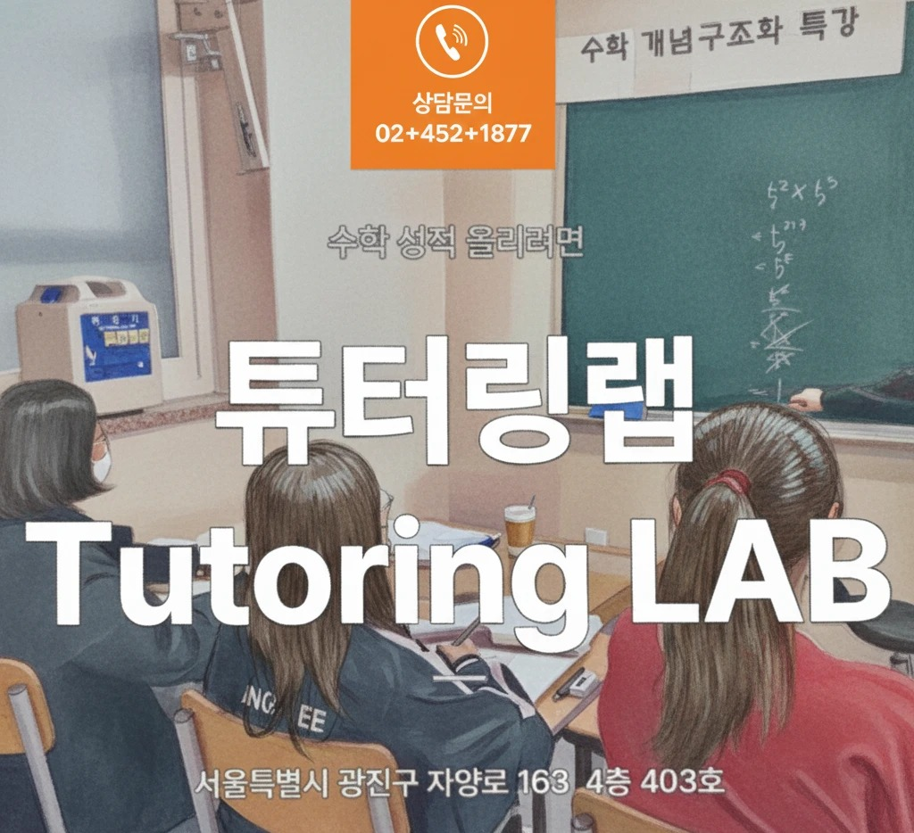

수업만 듣는 학원도, 관리 없는 과외도 아닙니다. 튜터링랩은 최상위권 전담 튜터의 몰입형 1:1 관리와 학원급 데이터 커리큘럼을 결합한 수학 전문 프리미엄 학습 시스템입니다.
성동광진교육지원청 제18442호
튜터링랩 실제 수업 현장 · 서울특별시 광진구 자양로 163 4층 403호
서울특별시 광진구 자양로 163 4층 403호에 위치해 구의동·자양동·광장동·중곡동에서 도보와 차량으로 편하게 오실 수 있습니다. 광진구 전역에서 수학 전문 프리미엄 몰입 관리를 찾는 학생과 학부모님이 많이 찾아주십니다.
일반 과외의 밀착 관리와 학원의 체계적인 커리큘럼, 두 가지 장점만 결합했습니다.
학생 1명에게 전담 튜터와 학습매니저가 함께 붙어 진도, 오답, 멘탈까지 매주 밀착 관리합니다.
내신·모의고사 기출 데이터를 분석해 학생별 약점 단원을 진단하고, 목표 등급에 맞춘 개인 커리큘럼을 설계합니다.
내신 점수, 모의고사 등급, 특목고·SKY 합격까지 실제 데이터로 확인 가능한 결과를 목표로 합니다.
튜터링랩 선배들의 실제 이야기를 각 페이지에서 자세히 확인하세요.
서울대·고려대·연세대에 합격한 튜터링랩 선배들이 직접 전하는 합격 스토리와 학습 노하우를 확인하세요.
후기 보러가기 → 성적 향상 사례내신 50점대에서 90점대로, 모의고사 4등급에서 1~2등급으로. 실제 성적 변화 사례를 데이터로 보여드립니다.
사례 보러가기 → 특목·자사고 합격후기전국 단위 자사고와 특목고, 영재고 합격까지. 튜터링랩과 함께한 입시 준비 과정을 생생하게 전합니다.
후기 보러가기 →더 많은 사례는 ‘성적 향상 사례’ 후기에서 확인하실 수 있습니다.
입학 상담부터 목표 등급 달성까지, 4단계로 관리합니다.
현재 실력과 약점 단원을 정밀 진단합니다.
목표 등급·목표 학교에 맞는 개인 커리큘럼을 설계합니다.
전담 튜터·매니저가 주간 단위로 진도와 오답을 밀착 관리합니다.
정기 테스트 결과를 데이터로 리포트하고 커리큘럼을 보완합니다.
학생의 현재 위치를 정확히 진단하고, 목표에 맞는 맞춤 커리큘럼을 제안해드립니다.